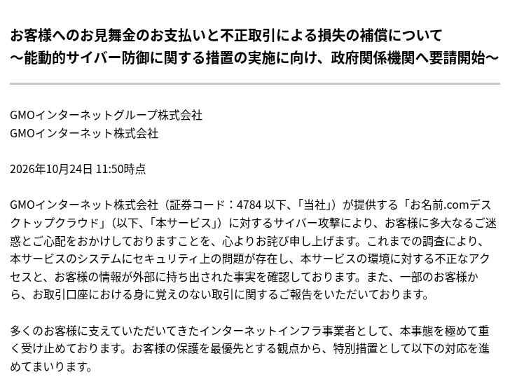
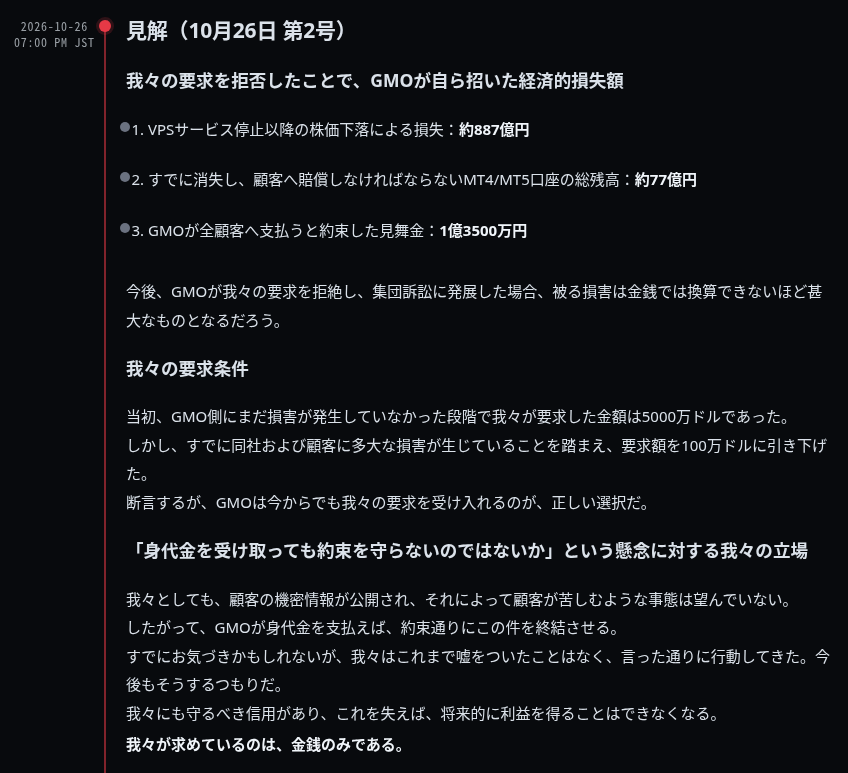
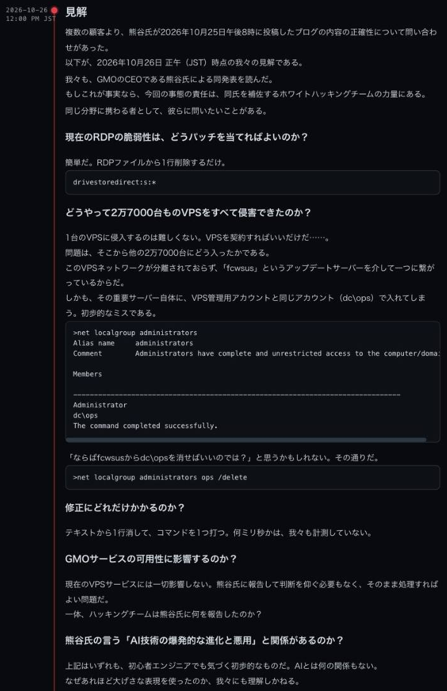
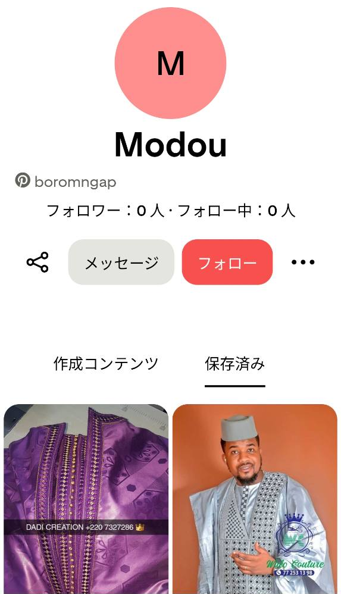
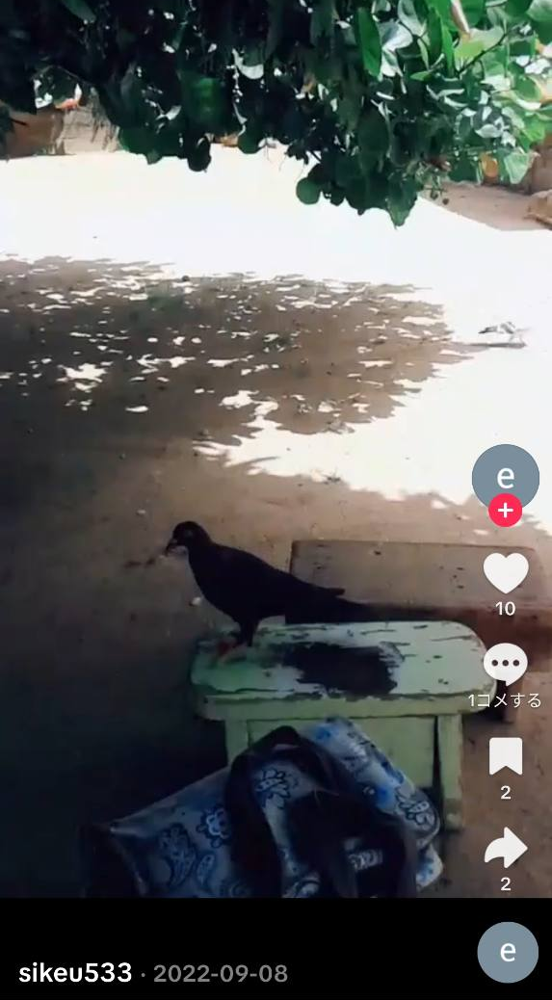
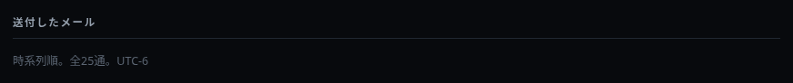
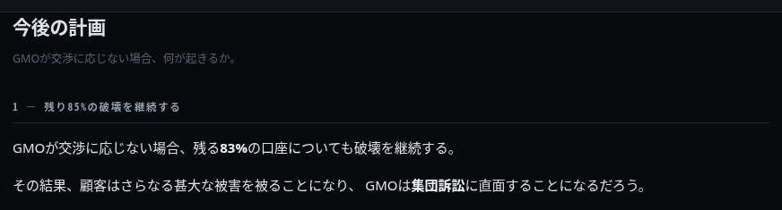

公開資料の調査記録 · 2026年10月27日更新
GMO 事件を個人的に調査してみた。
GMOの公式発表から事件の経緯を整理し、事件サイトのメール画像、同名SNS、公開ファイルの内部情報を照合した。セネガルに関連する手がかりは見つかったが、攻撃実行者の本人特定には至っていない。
目次
1. 事件の経緯とGMOの公式発表
お名前.com デスクトップクラウドは、Windowsの仮想サーバー上でMT4・MT5などを動かせるサービスである。今回の問題はサービス基盤への不正アクセスと、そこに保存された認証情報の取得・悪用であり、FX業者の取引口座に身に覚えのない取引が発生したとの報告につながっている。
公式発表と、攻撃者を名乗るサイトの主張は分けて読む。26,739件は第3報で「影響の可能性があるサーバー数」と説明されており、全件で侵入・情報取得が確認されたという意味ではない。10月24日の第4報では、情報が外部に持ち出された事実を確認したと発表された。
発覚から第5報まで
| 日付・時刻（日本時間） | 経緯・公式発表 | 主な出典 |
|---|---|---|
| 10月19日 | 顧客の問い合わせを受け、GMOが調査開始。 | 第2報 |
| 10月20日 | 不正プログラムの設置を確認。新規申込とコントロールパネルを停止。 | 第2報 |
| 10月21日 04:00 | 全プランのサーバーを順次停止。第1報を公表。 | 第1報 |
| 10月21日 | 外為ファイネストが、不正ログイン・不正取引の確認と対象口座の制限を公表。 | 外為ファイネスト |
| 10月22日 16:59時点 | 第2報。認証情報が取得・不正利用された可能性を公表。同日、警察に相談。 | 第2報 |
| 10月23日 16:10時点 | 第3報。変更後も接続が残る場合があるとして、全セッションの切断を強調。 | 第3報 |
| 10月24日 11:50時点 | 第4報。情報持ち出し確認、見舞金・損失補償・代替基盤への移行方針を公表。 | 第4報 |
| 10月24日 | 第5報。利用者端末の確認、バックアップ、パスワード変更とセッション切断を再要請。 | 第5報 |
第4報で確認されたこと
GMOはシステムにセキュリティ上の問題があり、不正アクセスと顧客情報の外部持ち出しを確認したと説明している。攻撃者とみられる者から金銭要求と、情報公開・不正取引継続・ランサムウェア攻撃等の脅迫を受けていることも公表した。これは個々の脅迫内容が既に実行されたことを一律に認めたものではない。
対応方針として要求には応じないこと、警察への証拠提出、関係事業者との取引・通信遮断の連携、政府機関への能動的サイバー防御に関する要請を挙げている。政府への要請と、措置が実際に決定・実施されたことは区別する。
見舞金・損失補償・代替サービス
| 項目 | 発表内容 | 留意点 |
|---|---|---|
| 見舞金 | 現利用者全員に一律5,000円。10月30日23:59までに受取方法等をメールで案内する予定。 | 不正取引による損失補償とは別。 |
| 損失補償 | 本件に起因すると認めた不正取引による実現損失を対象に、取引差損や手数料等を補償。 | 市場変動、得られたはずの利益、間接損害は対象外。取引所等の返金分は控除。 |
| 申請案内 | 申請方法・必要書類・受付期間・支払時期等を11月6日までに案内する予定。 | 本人確認や取引記録等の確認を経る。すべての損失を無条件に補償するという発表ではない。 |
| 代替サービス | 現行基盤をそのまま再開せず、独立したクラウド基盤の代替サービスへ希望者を案内。移行後6か月無償。 | 案内は10月30日23:59までの予定。利用者の同意なく移行しない。 |
出典：GMO第4報（2026年10月24日11:50時点）。期限・条件は発表時点の内容であり、後続の公式案内で更新される場合がある。
パスワード変更とセッション切断は別の対応
第3報・第5報は、事業者の仕様によってはパスワードを変えても既存セッションが一定期間残る場合があると説明している。したがって「変更済みだから接続も切れた」とは扱わない。FX取引に使っていない端末から変更し、取引事業者を通じて全セッションを切断することが要請されている。
第5報はPC・スマートフォンのフルスキャンとバックアップ、保存済み認証情報の見直し、多要素認証等を案内している。端末への影響も調査中とする予防的措置であり、すべての端末にバックドアがあるという確定情報ではない。攻撃者を名乗る連絡には返信せず、URLや添付を開かないよう求めている。

2026年10月24日11:50時点の発表。システムへの不正アクセスと情報の外部持ち出しを確認したという公式説明であり、攻撃者側のすべての主張を認めたという意味ではない。 出典。
2. 攻撃者を名乗る側の通告・要求・公開予告
事件サイトでは、侵入や情報取得の主張から、取引口座への不正操作、GMOへの交渉要求、利用者への連絡、データ公開・暗号化の予告へと、圧力を強める説明が続いている。以下の時刻と件数は、サイトの記載や公開メール画像に基づく。実際の送信・通話・攻撃の全記録を確認したものではない。
サイトに記載された連絡の流れ
| 日付・時刻 | 記載されている行動 | 資料と位置づけ |
|---|---|---|
| 10月21日 11:55 JST | 交渉用メッセージのURLをGMOへメール送付し、サポートへの電話連絡も済ませたと説明。 | timeline.phpの記載。初回通告が本当にこのメール・この時刻かは未確定。 |
| 10月21日 14:00 JST | 追加のメールを送付したと記載。 | timeline.php。メール画像との対応には食い違いや不確実性がある。 |
| 10月21日 17:00 JST | 最終警告と同時に口座の破壊を始めたと主張。 | timeline.php。メール画像にはそれ以前の破壊通知と解釈できるものもあり、説明の順序をそのまま確定時系列とは扱えない。 |
| 10月21日の電話 | 7回・計28分以上の電話をかけたと主張。宛先としてシンガポール、タイ、日本の番号を列挙。 | emails.php。宛先の国番号であり、発信者の所在地を示さない。通話原記録は未入手。 |
| その後のメール | 2〜3時間おきの進捗連絡、計25枚のメール画像を掲載。公開窓口26件、役職員33人分69アドレスへの送付を主張。 | emails.php。掲載枚数、ユニークなメール数、送信成功数は同じとは限らない。 |
| 10月23日頃 | 口座の残高毀損の継続、機密情報の公開・販売、解約済み利用者への影響を主張。 | plan.php等。被害対象や金額の全体像を独立に実証したものではない。 |
| 10月24日 12:00 JSTを期限として記載 | GMOの過失とする情報の公開を予告。トップページに最終メール画像とsamples.zipを掲載。 | トップページの表示。GMO第4報の11:50という時刻との前後関係は確認できるが、因果関係は未確認。 |
追加声明：100万ドルの要求と10月27日正午の期限
10月24日の初回取得後、トップページには10月24日20:30、10月26日正午、同日19:00付の声明が追加された。支払要求額と期限が明記され、情報公開・暗号化の予告に加えて、GMO側の説明への反論や、支払えば終結させるという説明が加わっている。以下は声明に付された日時であり、取得時刻・初回公開時刻を直接示すものではない。
| 声明の表示日時（日本時間） | 追加された要求・説明 | 確認の範囲 |
|---|---|---|
| 2026年10月24日 20:30 | 10月27日正午までに100万米ドルを支払えば、顧客へのランサムウェア攻撃や情報公開を行わないと提示。利用者にはRDPファイルを訴訟の証拠として保管するよう促す。 | 支払条件と期限の明示を確認。支払先口座やウォレットは今回の公開本文にはない。 |
| 2026年10月26日 12:00 | 熊谷氏の10月25日ブログに反論。ドライブ共有設定と更新サーバーを介した管理権限を問題視し、AIとは関係のない初歩的問題だと主張。10月27日正午の期限を再提示。 | 侵入経路の説明は攻撃者側の主張。実環境の構成や対策の十分性を検証したものではない。 |
| 2026年10月26日 19:00 | 当初は5,000万米ドルを要求し、現在は100万米ドルに引き下げたと説明。金銭だけが目的で、支払えば終結させると主張。 | 要求額は本人側の説明でも減額。追加声明が増えたことと、金額が増えたことは別。約束の履行を保証する証拠はない。 |
公開文面では、要求額を5,000万ドルから100万ドルへ引き下げたと説明している。追加声明では期限と支払条件に加え、技術的な反論やGMOの責任を追及する説明が加わった。

当初5,000万ドル、現在100万ドルという説明と、支払いによる終結の主張。掲載額・損失の因果関係・約束の履行は、いずれも別途検証が必要である。 出典。
10月26日正午の声明が説明する侵入経路
10月26日正午付の声明は、最初のVPSへのアクセスと、そこから他のVPSへ広がる過程を分けて説明している。最初の足場はVPSの正規契約によって得られるとし、別の顧客環境への到達については、ネットワークの分離と共通の管理権限を問題視している。
| 段階 | 声明の説明 | 確認できていない点 |
|---|---|---|
| 最初の足場 | VPSを契約すれば、自分が利用するVPSへアクセスできる。 | 契約記録、契約者、実際に使われたVPS。正規契約した環境へのログインと、他の環境への不正アクセスは別の行為である。 |
| 共通管理基盤への到達 | VPSネットワークが分離されず、fcwsusという更新サーバーを介してつながっていた。 | 実際の通信経路、ネットワークの到達制限、サービス構成。サーバー名と説明だけでWSUS製品の脆弱性や特定のCVEを確認したことにはならない。 |
| 管理用アカウントの権限 | 更新サーバーにも、VPS管理用と同じdc\opsで入れたと主張。管理者グループの一覧を掲載している。 | 認証情報の入手方法、実際のログイン、権限を得た時点。グループ一覧の表示だけでは、権限奪取の手順や実行を証明できない。 |
| 他のVPSへの展開 | 共通の管理権限と接続経路によって、多数のVPSを侵害できたとする。 | 各VPSの認証・操作ログ、実際の侵害範囲、2万7,000台という主張の裏付け。 |
この説明の中心は、通常の利用者が入れる環境から、他の顧客にも影響する管理基盤へ到達できたという主張である。仮にその通りなら、顧客間の分離と管理権限の扱いが重要な問題になる。一方、「WSUSの脆弱性を突いて管理者になった」という具体的な流れは、この声明だけでは確認できない。

fcwsusとdc\opsへの言及がある。侵入経路の自己説明であり、認証情報を得た手順や被害側の操作ログは示されていない。声明本文。
声明は、ドライブ共有の設定変更と管理者グループの修正で対応できるとも主張している。ただし、侵害済みの環境では、設定の修正だけで認証情報の流出、既存セッション、別の永続化手段まで解消したとはいえない。GMOは第4報で、侵害された現行基盤をそのまま再開せず、代替基盤へ移行する方針を公表している。
また、掲載された問題が初歩的であることと、実際の攻撃でAIを使ったかどうかも別の論点である。声明側はAIと無関係だと主張しているが、使われたツールや侵入時の記録を取得したわけではない。
経済損失を持ち出す圧力
19:00付の声明は、株価下落による約887億円、口座残高の約77億円、見舞金1億3,500万円を並べ、GMOが支払いを拒否したことで生じた損失だと説明する。これらは攻撃者側の算定・因果関係の主張であり、独立に検証した損害額ではない。株価変動、実現した取引損失、見舞金は性質が異なり、単純に合算して公式被害総額とは扱えない。
初期の口座毀損の進捗通知から、利用者の生活データや企業の評判を圧力の材料にし、さらに支払いによる終結を売り込む説明へ広がっている。ただし、公開声明だけで実際の交渉過程や、相手の内部的な動機変化まで断定しない。
熊谷氏の説明との照合
熊谷氏の10月25日付ブログは、26日の追記で5,000万ドルの金銭要求を受けたと明記し、要求文書の日時として10月21日11:57を掲げている。要求・支払いには応じていないとも説明する。当初5,000万ドルという点は攻撃者側の追加声明と重なるが、100万ドルへの減額をGMOが受領・承認したとは確認できない。
同ブログは事前に社内から改善課題が指摘されていたことと、対応が十分でなかったことを説明し、通信ログ獲得等のため裁判所を通じた開示請求手続きに着手したとも記している。これに対し、攻撃者側は26日正午付で技術的な反論を掲載した。どの指摘が今回の侵入原因に当たるか、どの事業者へ開示請求したか、実際に誰を特定できたかは未公表である。
AIについては、熊谷氏が広く脅威の変化やARTEX悪用の調査に言及する一方、攻撃者側は今回の問題をAIと無関係だと主張する。両者の説明があることと、本件で特定のAIが使われたことを技術的に確認することは別である。
出典：10月26日の追加声明 ／ 熊谷正寿氏のブログ（10月25日付・26日追記）。参照したトップページHTMLのSHA-256：0fd5529d227b1fe74d1804c45ee9107cb66b395a7d95a688d04446706efba264。
何を要求しているのか
公開ページの明示的な要求は、GMOに交渉を始めさせ、メッセージへ返答させることだった。さらに支払いを拒否した場合の行動を並べ、顧客の資産や個人情報を圧力の材料としている。GMOも第4報で、攻撃者とみられる者から金銭要求を受けたと公表している。
初回取得時には身代金額を確認できなかったが、追加取得した声明では100万ドル、当初の要求として5,000万ドルが明示された。公開本文から支払先は確認できない。毀損額、口座残高、保有データ件数は要求金額とは区別する。
| 要求・圧力の対象 | 記載・主張の内容 | 確認上の区別 |
|---|---|---|
| GMOとの交渉 | 返信と交渉開始を要求。返答がないことを、口座毀損や情報公開を続ける理由として説明。 | 相手側の自己説明。行為を正当化する根拠とはならない。 |
| 口座残高 | メール画像には17:00以降、5分おきに計50万ドル相当を毀損し、さらに全残高へ拡大するという予告。 | 予告と実行は別。金額の主張を公式な損害総額とは扱わない。 |
| 利用者PC | 自宅PC等の暗号化やバックドア設置を主張・予告。 | GMOは端末への影響を調査し予防策を案内。全端末で設置・暗号化を確認したという発表ではない。 |
| ブラウザ・個人データ | 閲覧履歴や機密情報を家族・知人・業務上の連絡先へ送ると脅迫。 | この種の送信が実際に行われたかは今回の調査では確認していない。 |
| 取引口座の認証情報 | MT4/MT5の認証情報、メール、残高等の公開を予告。 | 保有・公開範囲は未確定。掲載情報の真正性は未検証。 |
| 機密情報の販売 | データを段階的に公開し、ダークウェブで販売すると予告。 | 販売告知や売買成立を今回の調査で確認したわけではない。 |
| 利用者からGMOへの圧力 | 被害者の立場に寄り添うような説明や訴訟支援の主張を交え、GMOへの働きかけを促す。 | 脅迫を行う側の主張と、被害者支援の実態は区別する。 |
連絡手段と公開の段階
公開メールには交渉用サイトへの誘導があり、URLの一部は画像上で伏せられている。先行調査のActiveTK記事は、連絡手段としてSimpleXまたはメール返信への言及も整理している。これらは掲載資料の説明であり、実際の交渉記録や相手の本人確認を取得したものではない。
最初はGMO側への通告として提示され、次に不正操作の進捗を示す画像・口座一覧が並び、その後は利用者データの公開や暗号化を予告する構成になっている。10月24日のトップページには、取得データの実例と称するZIPが置かれた。この構成から、資産の毀損と情報公開の双方を交渉圧力として用いていることが読み取れる。ただし、侵入時点からこの順序を計画していたか、動機が途中で変化したかは確定できない。
GMOの発表との対応
GMO第4報は、金銭要求に加え、不正操作の継続、情報公開、ランサムウェア攻撃等の脅迫を受けたことを公表しており、公開サイトの要求と内容面で重なる。一方、要求に応じない方針と、証拠の警察提出、関係事業者との遮断措置も示している。公式に確認できるのは、要求を受けた事実と対応方針であり、攻撃者側の全説明や被害規模を認めたということではない。
サイトは「最終通告の10分前にGMOが発表した」と強調する。第4報の11:50とサイト記載の期限12:00は10分差だが、GMOがその期限に対応して発表したかは確認できない。先に公開していた第1〜第3報の存在も含め、サイトの「沈黙」という説明をそのまま事実とは扱わない。
関連資料：サイト側の年表 ／ 要求・計画ページ ／ GMO第4報 ／ ActiveTKの先行調査
3. 事件サイトの主張と検証の接点
事件サイトは、VPS基盤の侵害、RDPドライブ共有による利用者PCへのアクセス、ブラウザ情報の取得、口座残高の毀損、情報公開やランサムウェア攻撃を主張している。今回の調査では、主張の存在と実行の確認を区別した。
| サイト側の主張・資料 | 照合できたこと | 残る問題 |
|---|---|---|
| 管理基盤や管理者認証情報を利用した侵入 | 公開ログの収集先パス、FDC識別子、RDP共有パスは確認した。 | 侵入経路の根本原因を認証ログやフォレンジック資料で確認したわけではない。ADの使用だけで脆弱性や侵入原因が証明されるものでもない。 |
| 利用者PCからのファイル収集 | samples.zipに10台分の収集記録があり、tsclient経由の列挙・コピー記録と整合。 | ログの真偽・全コピーの成否・全利用者への影響は未確定。 |
| 保存ブラウザ情報の取得 | History・Bookmarks・Login Data等のコピー記載。 | 当該DB本体はZIPに含まれず、パスワードの復号成功は確認していない。 |
| 口座の破壊・被害金額 | 不正取引そのものはFX事業者の公表がある。公開Excelにも口座・金額一覧がある。 | サイトの合計金額や対象数を独立に実証したものではない。表示上の主張を公式被害額と混同しない。 |
| ランサムウェア・バックドア | GMO第4報はその種の脅迫を受けたと公表。 | 脅迫の受領と、端末での暗号化・設置の実行確認は別。 |
| 日時や進捗の説明 | メール画像とタイムライン、ファイル日時を比較できる。 | 同一メールの同定や記載の正確性には不確実性があり、国・現地時刻を断定しない。 |
GMOの情報持ち出し確認は、事件サイトが公開する全資料・全説明の真正性を保証するものではない。反対に、サイトの数字や時刻に不整合があることだけで、不正アクセスや不正取引そのものを否定することもできない。
4. メール・SNSの照合
調査の出発点は、事件サイトのメール画像に写っていた boromngap@gmail.com だった。メールの表示名よりも、サービスをまたいで使われる可能性のある boromngap という識別子に注目した。
Pinterestで同じユーザー名を見つけ、復旧画面では「Modou」と bo…@g….com という部分メールを確認した。保存されていた2件の衣装投稿に西アフリカとの関わりが見えたため、同じユーザー名のTikTokも確認した。
TikTokにはクンポと考えられる文化的な映像があり、Pinterestの保存内容と、西アフリカの地域文化への関心という面で重なって見えた。ただし映像には別ユーザー名の透かしがあり、転載の可能性もある。さらに公開ページ内の動画データを調べると、2本とも locationCreated: "SN" だった。ここで、保存・投稿された内容の印象と、プラットフォームが返す地域フィールドが別々の材料としてつながった。
一方、TikTokに映るのがPinterestと同一の映像・同一の場所かどうかは、フレーム単位で照合できていない。同じ文化・地域への関連と、同じ撮影者・所有者であることは区別している。
| 対象 | 結果 | 限界 |
|---|---|---|
| メール画像 確認済み | boromngap@gmail.com、表示名「Dmitry Orlov」。 | 画像上の表示。本名・実送信元・所有者は未認証。メール原本未入手。 |
| Pinterest 確認済み | ユーザー名boromngap、表示名「Modou」。確認した復旧画面の部分メールはbo…@g….com。 | 当該Gmailと整合するが、伏せ字のため完全一致の直接証拠ではない。 |
| TikTok 確認済み | 2動画とも@boromngap、表示名「sikeu533」。投稿者IDは一致。公開データ上の投稿日は2022年8月19日・9月8日（UTC）。 | 事件以前の同名投稿がある。現在のGmail所有者との同一性・継続所有は未証明。 |
| 復旧・登録判定 応答確認 | Pinterestでは当該メールの登録済み判定を確認した。TikTokでは当該メールとダミーメールで応答が異なることを確認し、Courseraでも同じメールの登録を確認した。 | TikTokの復旧画面ではコード入力待ちになっている。ただし、この画面自体には公開ユーザー名は表示されないため、登録先が@boromngapであることの直接確認とは区別する。 |
| Coursera 登録確認 | 当該メール boromngap@gmail.com のCoursera登録を確認。 | 確認したのはメールの登録状況。登録日、受講内容、修了証、所有者の本人性は未確認。 |
| Facebook・X 検索結果 | 当該メール・ユーザー名で検索した範囲では、対応するアカウントは見つからなかった。 | 別名・非公開・検索対象外などの可能性があり、不存在は断定しない。 |
Pinterest ／ TikTok動画1 ／ TikTok動画2
Pinterest：同名プロフィールと部分メールの照合
ユーザー名boromngapで確認したプロフィールは、表示名が「Modou」だった。アカウント復旧画面でも「Modou」と、bo…@g….comという部分メールが表示された。事件サイトのメール画像にあるboromngap@gmail.comと、ユーザー名・表示名・見えているメールの文字列がつながる。
| 確認箇所 | 表示・結果 | 照合できる範囲 |
|---|---|---|
| 公開プロフィール | ユーザー名 boromngap／表示名 Modou | 復旧画面と公開プロフィールで表示名が一致する。 |
| 復旧画面のメール表示 | bo…@g….com | 当該Gmailと整合する。ただし伏せ字の部分を復元したわけではなく、完全一致の直接証拠ではない。 |
| 当該メールでの登録判定 | 登録済みの応答を確認 | サービスに当該メールの登録があることと、事件当時の操作者の本人性は別の確認事項である。 |

「Modou」「boromngap」と、保存済みの衣装投稿2件が同じ画面に表示されている。保存画像の人物がアカウント所有者本人であるとは確認できない。

衣装の投稿が2件。左の画像には「DADI CREATION」と国番号+220の表示。+220はガンビアで、セネガルの+221とは異なる。セネガル単独ではなく、セネガンビア圏との関連を検討する材料になる。
プロフィールと保存されている衣装2件、作成・最終保存のフィールド、保存側と保存元それぞれのピンを照合した。以下の日時は写真の撮影日ではなく、Pinterestが返したアカウント・ピンの記録である。
Pinterestのアカウント作成・保存日・保存元の投稿日
プロフィールに残る作成・最終保存のフィールドと、保存された2件それぞれのピンを照合した。保存側ページの構造化データには、authorとしてModou / boromngapが記載され、sharedContentには別の保存元ピンが示されている。この対応から、保存側の日時と保存元の投稿日時を分けた。
| 出来事 | 対象 | 日本時間（UTC+9） | UTC | 根拠・参照 |
|---|---|---|---|---|
| アカウント作成 | boromngap / Modou | 2023-06-22 21:20:23 | 2023-06-22 12:20:23 | ユーザーのcreated_at 公開データ |
| 保存元ピンの投稿 | 紫色の衣装 | 2022-04-23 10:20:50 | 2022-04-23 01:20:50 | 保存元のdatePublished・created_at。is_repin=false 公開データ |
| 当該アカウントでの保存 | 紫色の衣装 | 2026-05-01 06:39:32 | 2026-04-30 21:39:32 | 保存側ピンのdatePublished。author=boromngap、別のsharedContentあり 公開データ |
| 保存元ピンの投稿 | 水色の衣装の男性 | 2025-03-13 07:26:41 | 2025-03-12 22:26:41 | 保存元のdatePublished 公開データ |
| 当該アカウントでの保存 | 水色の衣装の男性 | 2026-04-30 20:10:15 | 2026-04-30 11:10:15 | 保存側のdatePublished・created_at。is_repin=true、pinner=boromngap 公開データ |
| 最終保存の記録 | boromngap / Modou | 2026-05-01 06:39:32 | 2026-04-30 21:39:32 | ユーザーのlast_pin_save_time。紫色の衣装の日時と一致 公開データ |
紫色の衣装は画像シグネチャ 58f6461167286bbd17d232c74cdb577d、水色の衣装は 2a713acabdbe3c825653acc94d0f5704 が保存側と保存元で一致する。紫色の保存元はis_repin=falseで、今回の追跡で確認できたPinterest上の元投稿に当たる。水色はsharedContentが示す保存元の投稿日であり、画像がインターネット上で初めて公開された日とまでは確認できていない。
最後に確認できる保存活動と「最終稼働」の違い
公開プロフィールのlast_pin_save_timeは Thu, 30 Apr 2026 21:39:32 +0000、日本時間では2026年5月1日06:39:32。紫色の衣装を保存した側のピン日時と一致する。これは取得した公開データで確認できる最後のピン保存であり、最終ログインや最終アクセスを示す値ではない。
保存せずに閲覧・ログインしていた可能性、公開データに出ない操作、非公開コンテンツの活動は評価できない。この日時以降アカウントが使われていないとも判断しない。日時とプロフィールの対応は、プロフィールの公開データでも確認できる。
2023年6月のアカウント作成と、2026年4〜5月の保存記録は、事件の同年10月より前である。ただし、日付が以前から存在することは、同じ人物による継続所有や、現在のメール所有者・攻撃実行者との同一性を証明しない。
ここでの日時はPinterestが公開データとして返した値であり、写真の撮影日時ではない。保存側ピンの作成・公開日時は当該アカウントの保存操作と整合し、最終保存フィールドとも一致するが、操作ログそのものを取得したわけではない。
5. 5月の保存記録と8月末のドメイン登録をつなぐ
同じ識別子のSNSを見つけたあと、気になったのは活動時期だった。Pinterestで最後に確認できる保存は2026年5月1日。一方、事件サイトのドメイン登録は8月末で、事件が表面化するのは10月である。この間隔を、本人による準備と見るのか、それ以前のアカウントが第三者に使われたと見るのか。まず、それぞれの日付が何を記録しているのかを揃えた。
| 出来事 | 記録された日時 | この日付が示す範囲 |
|---|---|---|
| 同名TikTokの投稿2件 | 2022年8月19日・9月8日（UTC） | 公開動画データに過去の投稿がある。事件当時まで同じ人が管理していたことは示さない。 |
| Pinterestのアカウント作成 | 2023年6月22日21:20:23 JST 12:20:23 UTC | 公開プロフィールのcreated_at。人物の本人確認やGmailの作成日ではない。 |
| Pinterestで最後に確認できる保存 | 2026年5月1日06:39:32 JST 4月30日21:39:32 UTC | last_pin_save_timeと保存側ピンの日時が一致する。最終ログイン・最終閲覧・利用停止日ではない。 |
| coronamng.storeの登録 | 2026年9月1日00:26:04 JST 8月31日15:26:04 UTC | RDAPのregistration。サーバーの契約日、当時の掲載内容、契約者の本人情報は未確認。 |
| 取得した証明書の有効期間開始 | 2026年9月1日00:43:21 JST 8月31日15:43:21 UTC | 証明書のnot_before。実際の初回アクセスやサイトの完成・公開日時そのものではない。 |
| 公開ZIP内の収集ログ | 2026年10月14日 本文のタイムゾーンは不明 | ログ本文に記載された日付。真正性や実際の操作日時を被害側ログと突き合わせたものではない。 |
| 顧客の問い合わせを受け調査開始 | 2026年10月19日 | GMOの公式説明。侵入の開始日とは限らない。 |
| メール送付・交渉要求の主張 | 2026年10月21日以降 | 事件サイトの年表やメール画像。画像と各行の対応、実際の送信時刻には未確認部分が残る。 |
準備の期間があったことと、何を準備していたかは分ける
登録日を8月31日と呼ぶ場合はUTC表記であり、日本時間では9月1日になる。登録から10月19日の調査開始までは約7週間ある。少なくとも、ドメインは事件が表面化するより前から存在していた。このため、サイトの不備を「事件直前に急いで立ち上げたから」とだけ説明する根拠は弱い。
ただし、この期間ずっとサイトを制作していたことや、登録時点から今回の事件を計画していたことまでは確認できない。8月末の登録・証明書と、10月に取得したサイト内容の間には、当時の掲載内容を示す空白がある。Namecheapとのホスティング契約日も取得していない。
5月以降の空白は、乗っ取りの時期を示さない
Pinterestの最後の保存からドメイン登録までは約4か月ある。ただし、保存をしていない期間も閲覧やログインはできる。最後の保存日を「所有者が使わなくなった日」や「第三者に奪われた日」と読むことはできない。
本人がPinterestへの保存をやめ、その後も同じメールを使っていた可能性と、途中でアカウントの管理者が変わった可能性は、どちらも現在の資料と両立する。公開データから、事件当時のGmailの所有者や操作端末へ直接つながる記録は得られていない。
本人による利用と、第三者による利用の比較
| 説明候補 | 今回の資料との関係 | 判断に足りないもの |
|---|---|---|
| 以前からの所有者が事件時にも使用 | メールとSNSで共通する識別子があり、同じ人が使い続けたと考えることは可能。 | 事件当時までの継続所有、実送信元、サイトの契約・管理者との対応。 |
| 認証情報やセッションを盗まれた | インフォスティーラー等による侵害は技術的にあり得る。ただし、本件の当該Gmailについて侵害を示す記録はない。 | 感染・不正ログイン・復旧操作・セッション失効などの記録。5月の保存だけでは侵害時期は分からない。 |
| 共有・譲渡などで利用者が交代 | 過去のSNS投稿と事件時点の操作主体が異なる説明候補。現時点で共有・譲渡の証拠はない。 | 管理者交代や共同利用を示す記録。複数人を名乗る声明だけでは確認できない。 |
| 差出人表示や画像だけが利用された | 公開画像だけでは、表示されたアドレスから実際に送信されたと認証できない。 | 受信側の未編集EMLと、信頼できる認証結果・署名等の照合。認証が整合しても現実の操作者は別の確認事項。 |
「GrabberでGmailを取られた」という説明には、メールアドレスが知られただけなのか、パスワードや有効なセッションまで侵害されたのかという違いがある。アドレスの露出だけでGmailを使えるようにはならず、Gmailの侵害があったとしても、それだけでPinterestやTikTokへの侵入まで確認したことにはならない。
残っている問題は、同じ識別子の過去のSNS活動と、事件当時のメール・サイトの操作主体の間を結ぶ記録がないことだ。5月と8月の日付は活動の前後関係を整理する材料になるが、本人説と乗っ取り説のどちらかを強く支持する材料にはまだならない。
出典：Pinterestプロフィールの公開データ ／ ドメインのRDAP。ピン・証明書のフィールドは、それぞれの節に記録した。
6. TikTokの映像とPinterestの保存内容を照合する
Pinterestでは同名プロフィールに衣装の投稿2件が保存され、TikTokでは同名ユーザーの動画を確認した。Pinterestのプロフィールと保存画像に続き、TikTokの投稿画面と映像内の透かしを照合する。
TikTok：文化的内容と転載の可能性

表示名はsikeu533。庭先のような場所に鳩が映る。画面内の景観や鳥だけでは、国や撮影地を判断できない。地域との関連は、別途確認した動画データのlocationCreated=SNと区別して読む。
クンポと考えられる演目。左上には、投稿画面のsikeu533とは異なる「@kadaitou5」と読めるTikTok透かしが見える。転載・再投稿・再編集の可能性があり、アカウント所有者自身が現地で撮影したとは判断できない。
画像から言えること、言えないこと
保存された衣装とクンポと考えられる映像には、西アフリカのセネガル・ガンビア周辺の文化への関わりを検討できる接点がある。ただし、衣装や演目は地域をまたいで共有され、他人の投稿の保存・転載でも同じ内容は現れる。PinterestとTikTokが同じ場面を写していることや、同じ撮影者によることは確認していない。
特に図Dの別ユーザー名の透かしは、撮影者と投稿者を同一視できない理由になる。アカウントの関心・共有内容と、本人の所在・国籍・現地滞在の証明は別である。図Cの鳩の映像には、それ自体から国を判断できる根拠は見つかっていない。
一方、2本のTikTokの公開データにSNがあることは、映像の見た目とは別の観察結果である。今回の照合では、同名の識別子、登録確認、保存・投稿内容、プラットフォームの地域フィールドをそれぞれ区別しながら、関連の有無を検討した。
7. 地域・文化・タイムゾーン
両TikTok動画の公開データにlocationCreated: "SN"。SNはセネガルの国コードで、今回の資料中で最も直接的な地域フィールド。ただし算出方法は未確認で、GPS・撮影地・現在地・国籍の証明ではない。
Pinterestで保存されている2件の投稿には衣装が写り、一方にはガンビアの国番号+220が見える。同名のTikTokには、セネガルや周辺地域に伝わるクンポと考えられる文化的な内容が映っている。これらは同じ地域文化への関わりを考える材料になる。ただし、言語・文化の厳密な同定や撮影地は未確定であり、保存や投稿が本人の居住地を示すとは限らない。
UTC表示は所在地の根拠から外す。Gmail画像の時刻はUTC表示と整合するものがあるが、OS・ブラウザー・仮想環境等の設定でも説明できる。Tor BrowserやTailsの使用も、この表示だけでは特定できない。
mail-01.pngとタイムラインの比較：UTC±0は条件付きの解釈
次の2つの表示が同じメールを示すか、時刻を比較した。
| 資料 | 実際の表示・記載 | 注意点 |
|---|---|---|
| 公開画像のmail-01.png右上 | Wed, Oct 21, 2:55 AM (1 day ago) | 画像内にUTCという明示はない。年・タイムゾーン・画面を撮った人の設定は、この表示だけでは分からない。 |
| timeline.phpの最初の通告 | 2026-10-21 11:55 AM, JST | サイト運営者が書いた説明であり、正確なメール送信ログやメールヘッダーとは異なる。 |
この2つが同じメールを、同じ日付について正確に記録していると仮定すると、日本時間はUTC+9なので、2026-10-21 11:55 JST − 9時間 = 2026-10-21 02:55 UTC。画像の2:55 AMと一致する。この計算はUTC±0表示と整合するが、画像からタイムゾーン設定を直接取得したものではない。
この推定が成り立たない可能性
- 別のメールの可能性：画像ファイル名の01は、最初に送信したメールを保証しない。タイムラインの行と同一のメールだと結びつけるMessage-IDや原本は未入手。
- タイムラインの誤記・編集の可能性：時刻や出来事の説明が手入力、丸め、転記ミス、後日の変更、または不正確な主張である可能性がある。参考記事もサイト説明とメールの順序・時刻の不整合を指摘している。
- 画面表示と送信日時の違い：Gmailの表示は閲覧環境やサービス側の設定等に左右され得る。右上の表示だけで、送信者の現地時間、端末のシステム時計、実際の送信日時を特定できない。
- 画像自体の制約：公開画像は切り抜き・加工が可能で、完全なメールヘッダーや認証結果を含まない。画像の表示をそのまま認証済みの時刻情報とは扱わない。
- 「1 day ago」の制約：閲覧・撮影した環境の相対表示であり、HTTP Last-Modifiedやサイトへのアップロード日時と同一ではない。これだけで撮影日を確定できない。
評価：「mail-01.pngの02:55と、timeline.phpの11:55 JSTが同じメールを正確に記録していると仮定すれば、UTC±0表示と整合する。ただし同一メールの同定・記載時刻の正確性・表示環境は未確認であり、別の説明もあり得る。」
UTC±0だったとしても、UTC設定の仮想環境、ブラウザーのタイムゾーン対策、サービスの表示設定などで説明できる。セネガル在住、Tor Browser使用、Tails使用のいずれも、この比較では確定しない。この推定は、TikTokのlocationCreated=SNとは独立した別の情報として扱う。
年表の出典：timeline.phpの掲載文。メール画像の表示文字列は上表に記録した。
ZIPのDOS日時とUTC追加フィールドには7時間差がある。一方、サイトにはUTC−6の記述もある。これらを一つの人物の現地時刻としてまとめる根拠はない。
時刻の食い違いから、どこまで作業環境を読み取れるか
資料を追っていて引っかかるのは、Windowsの画面、UTC±0と整合するメール表示、UTC−7相当の差があるZIP、サイトのUTC−6という記載が、一つの作業環境としてつながらない点だった。RDPでWindows環境を共有していたと考えれば、複数人の資料に同じOSの画面が現れることは説明できる。しかし、それだけでは、資料ごとに異なる時刻の扱いが現れる理由までは決まらない。
ここで切り分けたいのは、実際に時計が狂っていること、同じ瞬間を別のタイムゾーンで表示すること、異なる作業段階の日時を比較することである。この三つを混ぜると、正常な変換まで矛盾に見えてしまう。
| 比較する情報 | 確認したこと | まだ分からないこと |
|---|---|---|
| ZIPのDOS日時とUT更新時刻 | 10件のINFO.txtすべてで、DOS日時がUT更新時刻より7時間早い。例は2026年10月14日07:02:34と、同日14:02:34 UTC。 | どの端末・ソフトがその組み合わせを書き込んだか。UTC−7の設定、変換処理、元データの継承のどれに由来するか。 |
| メール画像の02:55と年表の11:55 JST | 同じメールの正確な記録であれば、画像の表示はUTC±0と整合する。 | 同一メールかどうか、年表の正確性、メール画面の表示設定。UTC±0という設定値自体は取得していない。 |
| サイト内のUTC−6という記載 | サイト側の説明にその表記がある。 | 誰の、どの端末の、どの時点の設定を指すか。実測された設定なのか、説明文の誤記なのか。 |
| Windowsの認証透かし | 先行記事が公開画像中のWindows認証透かしを指摘している。 | 攻撃者の手元のPC、共有する遠隔環境、侵害された環境のどれか。ZIP作成環境との同一性も未確認。 |
ZIPの7時間差は、内部ではむしろ一定している
DOS形式の日時にはタイムゾーンの識別情報がなく、UT追加フィールドはUTC基準の日時を持つ。ローカル時刻とUTCを併記するソフトであれば、両者に一定の差があること自体は不整合ではない。今回の10ログでは差がすべて−7時間で揃っており、少なくともこの組み合わせには共通する時刻処理が見える。
したがって、この7時間差を「作成者の時計が7時間狂っていた」「複数の担当者がばらばらの設定で圧縮した」とは読まない。UTC−7相当の変換が介在した可能性はあるが、それを担当者の居住地に直結させることもできない。また、保存されているファイル更新時刻は、圧縮操作を行った時刻そのものとは限らない。
RDPで共有していても、表示時刻が必ず同じになるわけではない
同じWindowsの同じセッションを使い、タイムゾーン設定も変えず、同じ方法で時刻を表示していたのであれば、時刻表示が揃うという予想には根拠がある。その条件が確認できたうえで同一の出来事に異なる時刻が付いていれば、設定変更や加工、説明の誤りを検討できる。
ただし、RDPには接続元のタイムゾーン情報を遠隔セッションへ反映する仕組みがある。Microsoftの説明では、タイムゾーンのリダイレクトを有効にすると接続元の設定を使い、無効または未構成ならサーバー側の設定を使う。同じサーバーでも、別セッションに異なる表示設定が適用される場合がある。これはサーバーの基準時計が接続者ごとに狂うという意味ではない。
今回、この設定値、接続元、セッションID、共有アカウントの有無は取得できていない。複数人がWindows環境を共同利用していたこと自体も未確認である。「共有RDPなら時刻差はあり得ない」とも、「時刻差があるから共有RDPだった」とも判断できない。
収集ログの\\tsclient\Cは、RDPのドライブ転送と整合するパスである。一方、ドライブ転送とタイムゾーン転送は別の機能であり、このパスの存在から時刻設定は分からない。被害側の接続元ドライブを収集した記録と、攻撃者側で共同作業した証拠も区別する必要がある。
Tor経由のアクセスと、ファイル処理・スクリーンショットは別に考える
Torを経由する通信と、Tor BrowserがWebページへ示すブラウザー情報は別の仕組みである。Tor BrowserにはタイムゾーンをUTCに揃えて識別を難しくする対策があるが、Tor経由でアクセスしたというだけで、OSや圧縮ソフト、表計算ソフトの日時処理まで一括してUTCになるわけではない。TailsというOSを使ったかどうかも、ブラウザーの表示からは決まらない。
スクリーンショットは、その時点で画面に表示されていたものを記録する。ブラウザーのメール表示、Webサービスのアカウント設定、Windowsの時計表示は、それぞれ別の設定に依存する場合がある。撮影後に別の環境へ移して画像を変換・公開することも可能であり、画面内の時刻と画像ファイルの更新日時が同じ環境を指すとは限らない。
「アクセス時だけブラウザーの対策が働き、ファイル処理には別の設定が残った」という説明は候補になる。しかし、Tor Browserの使用を直接示す資料や、撮影・編集・圧縮に使った端末の記録はないため、本件で実際にそうだったとは書けない。
一人・複数人・多国籍という仮説を分ける
一人がWindowsの遠隔環境で画面を取得し、別のOSやコンテナで圧縮し、サイトには日本向けの時刻を記載する流れでも、今回の資料は説明し得る。複数人が収集・連絡・加工・サイト運営を分担した場合も、資料ごとに異なる設定や処理の跡が残り得る。現在の情報では、この二つを区別できない。
さらに、「複数人」と「多国籍」は別の主張である。同じ国にいる複数人でも環境設定は異なり得るし、一人でも国外のサーバーや複数のVMを使える。UTC±0とUTC−7相当の情報があることを、二つの国の担当者がいた証拠として数えることはできない。攻撃者側が集団として発言していることも、実人数や構成国を独立に確認したことにはならない。
また、「通常なら全資料をUTCで揃えるはず」という前提は置かない。タイムゾーンを変換し、元の日時を保持する一般的なソフトの動作でも差は生じる。UTCへの統一の有無だけで、熟練度、匿名化への意識、担当者間の連携を評価することはできない。
画像形式やサイトの不備との関係
時刻とは別に、公開資料では拡張子・HTTPのContent-TypeがPNGなのに実体はJPEGという画像と、同じページ内の85％・83％という割合の不一致を確認した。これらは公開物の内容や整合性に関する具体的な観察である。一方、JPEGへの変換、Windows画面の取得、ZIPの作成が、同じ人・同じ端末・同じ作業工程によるものかは分からない。
そのため、これらをまとめて「全資料の時刻設定がばらばら」「多国籍チームの連携が取れていない」とは評価しない。初期の画像リンク不備という閲覧時の観察も含め、公開前の確認が十分でなかった可能性は検討できるが、それを侵入能力や攻撃者の人数へそのまま広げることはできない。
残っている空白と、矛盾を確かめる条件
現時点で空白なのは、収集、画面取得、画像変換、圧縮、アップロード、声明作成という各工程を、どの環境で誰が行ったかというつながりである。各資料に異なる形式の情報があることは確認できるが、それだけで複数の実機や担当者が介在したと確定することもできない。
時刻の矛盾を確かめるには、まず同じ出来事を示す資料を結びつける必要がある。メールなら、完全な原本のMessage-ID、配送ヘッダー、認証結果を手掛かりに、画像と年表の対応を調べる。Windows環境なら、同一ホスト・同一セッションか、どのタイムゾーン設定が適用されていたかが必要になる。ZIPについては、作成ソフトや元ファイルとの対応が不明なまま、更新日時を作業時刻へ読み替えない。
今回の違和感は、一つの時計が明らかに矛盾していると確認できたことではなく、異なる資料を同じ人物・同じ環境の作業として結びつける根拠が不足していることにある。複数人の分業は説明候補として残るが、多国籍、連携不足、初心者という評価は、追加の裏付けを待つ。
技術資料：Microsoft：Allow time zone redirection ／ Microsoft：SetTimeZoneRedirection ／ Microsoft：MS-DOS Date and Time ／ Tor Project：Tor Browser設計文書（歴史的な設計方針）。

画面には2026年10月21日11:55 AM, JSTと記載。メール画像との同定ができていないことに加え、HTML属性には別の時刻が残っている。 出典。

「時系列順。全25通。UTC-6」と記載されている。ただし、誰のどの環境の設定を指すのかは説明されていない。元ページ：coronamng[.]store/emails.php。
表示される時刻とHTMLの日時属性にも不一致がある
保存済みHTMLを確認すると、年表の最初の項目は画面表示が11:55なのに、time要素のdatetime属性は12:00になっている。また、10月26日「第2号」の表示は19:00だが、属性値は同日00:00である。
timeline.php
表示：2026-10-21 11:55 AM, JST
datetime：2026-10-21T12:00+09:00
index.php「10月26日 第2号」
表示：2026-10-26 07:00 PM JST
datetime：2026-10-26T00:00:00+09:00これは同じHTML内で表示用の文字列と機械可読の属性が一致していないという観察であり、UTC±0やUTC−7の推定とは別の問題である。更新時に属性を直し忘れた可能性などが考えられるが、編集履歴や制作ツールは取得していない。ここから作業者の所在地や、実際に時計が狂っていたことは判断できない。
8. ファイル・コードの検査
| 対象 | 主な結果 |
|---|---|
| samples.zip | 235,002 bytes。10個のINFO.txtと11ディレクトリ。PC名・ユーザー名・ファイル一覧・コピー記録。\\tsclientやHistory・Login Dataのコピー記載。RDP接続元ドライブ経由の収集ログと整合するが、記載の真偽・コピーや外部送信の成功・実行者は未確定。文書やDB本体は収録されていない。 |
| ZIP属性 | UNIX属性、UID/GID 0/0。コメント、先頭末尾の余剰データなし。全項目のctime欄は10月23日11:30:52 UTCで一致。一括準備と整合するが、人物や環境の特定には至らない。 |
| Excel3個 | WPS Sheets、ビルド1033-12.1.0.28485、作者・最終編集者Logitechが共通。スタイル・テーマが完全一致。同じ環境やテンプレートを経た可能性。作者設定は任意変更・引き継ぎ可能。 |
| Excel内部 | accounts-2.xlsxに非表示Sheet2があるが空。外部接続、Externalリレーション、埋め込み、マクロ、プリンター固有情報、元PCのパス、数式は検出なし。中国語「工作表」やcharset 134はWPS・テンプレート由来でも説明でき、国籍の証拠ではない。 |
| 画像30枚 | 最終メール2枚は.png拡張子だが実体はJPEG。ICCにQt識別子。残りはPNG。EXIF、GPS、作者名、隠しコメント、末尾の余剰データなし。画素内ステガノグラフィの不在までは未検証。 |
| robots.txt | 23 bytes。User-agent: *\r\nAllow: /。CRLF、末尾改行・コメントなし。HTTP更新日時10月22日20:15:18 UTC。作者・エディター・AIの識別情報なし。 |
| HTML・CSS・JS | 日本語コメント、CRLF。accounts.jsにlib/xlsx.phpの説明。生成AIのモデル名、生成履歴、LLM API、generatorタグは未検出。CSSのcursorはマウスポインター指定であり、Cursorエディターの証拠ではない。 |
ZIP SHA-256：8f1b1174270b79e3faedac1f44626360006a753bbcdde850deea150093eada58
9. インフラ・日時・過去の記録
- 対象は
coronamng[.]store。8月31日15:26:04 UTC登録。Namecheap、登録者情報はプライバシー代理。 - Aレコード
198.54.116.91、PTRserver72-4.web-hosting.com。NS・MX・SPFもNamecheap系ホスティングと整合。 - 取得できた証明書の名前は本体とwww。有効開始は8月31日15:43:21 UTC。本体とwww以外のサブドメインが存在しないと確定したわけではない。
- Excel2個ではHTTP更新日時が文書内作成日時より早く、差も一律ではない。時計のずれやmtimeの引き継ぎ等が考えられ、固定の時差として採用しない。
- メール画像25枚のHTTP日時は10月22日の複数時間帯に集中。ファイル名順は日時順ではなく、送信時刻や本人の生活時間を証明しない。
同じ配信IP上の別ドメインは、同じ運営者とは限らない。ドメイン登録日・証明書発行日だけで事件の準備開始日まで確定することもできない。
Namecheapの公開基盤と、Windowsの作業環境
Aレコード198.54.116.91、PTRのserver72-4.web-hosting.com、Namecheap系のネームサーバーは、同社のホスティング利用と整合する。公開サイトを置くサーバーの情報であり、画面取得・侵入操作・画像変換・ZIP作成を行った端末の情報とは区別する。
同じ配信基盤にファイルが置かれていても、作成環境が共通とは限らない。一人が別の環境を使う場合も、複数人が作った資料を公開担当がまとめる場合もある。共有サーバーの利用だけで、攻撃者の国籍、人数、技量や匿名性を評価することはできない。
2026年10月27日に再取得したRDAPでも、登録日時は2026年8月31日15:26:04.258 UTCだった。現在の登録記録は再確認できたが、ホスティング契約の開始日や契約者情報は得られていない。
Namecheapの暗号資産決済という選択肢
Namecheapは公式にBitcoinなどの暗号資産決済へ対応し、ドメインやWebホスティングの購入に利用できると説明している。カード決済以外の選択肢があることは、同社を公開基盤に選ぶ理由の候補になる。
ただし、今回のドメインやホスティングが暗号資産で支払われたことを示す請求書・決済記録はない。対応している決済手段と、実際に使われた決済手段は区別する。また、暗号資産決済への対応だけで、契約者情報や事業者側の記録が残らないとはいえない。
10. アカウント照合の証拠を段階別に整理
同じ文字列が見つかったこと、メールがサービスに登録されていること、そのメールで特定の公開アカウントを管理していること、攻撃を実行したことは、それぞれ別の確認事項である。
| 段階 | 確認材料 | 評価 |
|---|---|---|
| ① 事件資料 → メール識別子 | 公開メール画像の差出人表示：boromngap@gmail.com / Dmitry Orlov | 画像に存在する表示は確認済み。完全なメールヘッダー、DKIM/SPF/DMARC結果、送信経路は未確認。 |
| ② メール識別子 → Pinterest | 公開ユーザー名boromngap。確認した復旧画面のModouとbo…@g….com。登録済み判定の確認結果。 | 文字列と部分メールは整合する。登録済み応答も確認したが、伏せ字部分を復元したわけではない。 |
| ③ メール識別子 → TikTok | 同名ユーザーがあり、当該メールで復旧画面を確認。ダミーメールとの応答差も確認した。 | メールの登録を支持する材料。ただし復旧画面自体に@boromngapとの関連は表示されていない。 |
| ④ TikTok → 地域情報 | 2本ともlocationCreated="SN"。投稿者IDも共通。 | セネガルに対応する地域情報が動画データに存在。算出方法・位置精度・撮影者は未確認。 |
| ⑤ アカウント所有者 → 攻撃実行者 | 現在は識別子の一致と公開資料の関連が中心。 | 侵害・共有・所有者変更・なりすまし等の可能性を排除する認証ログや捜査資料は未入手。 |
FacebookとXは今回の検索範囲では未検出。Courseraでは当該メールの登録を確認した。いずれも不存在、職業、技能、経歴を確定する材料ではない。
11. TikTokの実際のフィールド
| 項目 | 動画1 | 動画2 |
|---|---|---|
| 動画ID | 7133585136553037062 | 7140974393378770182 |
| uniqueId | boromngap | boromngap |
| nickname | sikeu533 | sikeu533 |
| author.id | 7102805666658075653 | 7102805666658075653 |
| createTime（Unix秒） | 1660917224 | 1662637670 |
| 投稿時刻（UTC） | 2022-08-19T13:53:44+00:00 | 2022-09-08T11:47:50+00:00 |
| locationCreated | SN | SN |
| 動画の長さ | 20秒 | 3秒 |
値の取得箇所は公開HTMLの __UNIVERSAL_DATA_FOR_REHYDRATION__ → __DEFAULT_SCOPE__ → webapp.video-detail → itemInfo → itemStruct。投稿時刻はプラットフォームのフィールドを変換したものであり、映像自体の撮影日時とは限らない。
CDNのホスト名や動画URL内の国・リージョンらしい文字列は配信インフラの情報を含むため、投稿者の所在地として採用していない。プロフィール名・投稿者IDは照合用の識別子であり、現実の氏名を認証するものではない。
12. ZIP内部の時刻・収集記録
ZIPは21項目、展開後合計1,195,591 bytes。暗号化なし、CRC全件一致。本文は全件UTF-8 BOM付き、CRLF改行。画像や文書そのものではなく、INFO.txtのテキストログが10件ある。
全体で [FILE] 10,891行、[COPIED] 4,352行。重複を除いたファイル数ではなく、コピー成功や外部送信の証明でもない。4ログには終端のEND OF EXTRACTIONがなく、処理途中または省略の可能性がある。
| フォルダID | 本文Timestamp（TZ不明） | ZIP UT更新時刻（UTC） | FILE行 / COPIED行 |
|---|---|---|---|
| FDC2292237407 | 2026-10-14 22:53:54 | 2026-10-14T14:02:34+00:00 | 251 / 93 |
| FDC2292493003 | 2026-10-14 22:54:00 | 2026-10-14T14:02:52+00:00 | 321 / 363 |
| FDC2292786402 | 2026-10-14 22:53:53 | 2026-10-14T14:29:24+00:00 | 428 / 280 |
| FDC2293049215 | 2026-10-14 22:53:53 | 2026-10-14T14:01:34+00:00 | 523 / 50 |
| FDC2293569413 | 2026-10-14 23:14:33 | 2026-10-14T14:56:34+00:00 | 1505 / 1100 |
| FDC2293609006 | 2026-10-14 22:53:53 | 2026-10-14T14:36:10+00:00 | 728 / 1155 |
| FDC2294231807 | 2026-10-14 22:53:53 | 2026-10-14T14:29:12+00:00 | 290 / 427 |
| FDC2294453203 | 2026-10-14 23:16:48 | 2026-10-14T14:20:56+00:00 | 2897 / 30 |
| FDC2394858203 | 2026-10-14 22:53:54 | 2026-10-14T14:35:12+00:00 | 3500 / 245 |
| FDC2397444807 | 2026-10-14 22:53:53 | 2026-10-14T14:24:16+00:00 | 448 / 609 |
UTC−7の推定方法
例としてFDC2292237407/INFO.txtは、通常のDOS日時が2026-10-14 07:02:34、追加フィールドのUT更新時刻が同日14:02:34 UTC。差が−7時間で全10ログに共通する。DOS日時をローカル時間と解釈するとUTC−7に相当するが、ソフトの変換や別環境の設定でも説明できる。
追加フィールドと権限
ローカル追加フィールドはUnix UID/GIDの0x7875とUT日時の0x5455のみ。全項目UID/GIDは0/0、ファイル権限0666、フォルダ0777。root・コンテナ・権限の一律設定等と整合するが、具体的なOS、ツール、作成者は確定しない。
ローカルヘッダーのctime欄は全項目2026-10-23 11:30:52 UTC。ファイルのatime欄は11:30:53〜54、フォルダは11:31:03 UTC。ctime欄は作成・状態変更に由来する場合があり、ZIP作成時刻の保証ではない。一括取り込み等の可能性がある。
本文内のパス
\\tsclient\C\Users\… はRDPで接続元ドライブが共有される場合に使われるパス。出力先として C:\ProgramData\USOShared\RdTmp\Extracted_… が記載される。Chrome/EdgeのHistory、Bookmarks、Login Data等のコピー記録もあるが、DB本体や平文パスワードはこのZIPに含まれない。
PC名・Windowsユーザー名・SID・私用／業務ファイル名は収集対象側の情報である可能性が高く、公開者の氏名や住所の根拠にはしない。
13. Excelの詳細と共通性
| ファイル | bytes | 文書内作成（UTC表記） | 文書内更新（UTC表記） | HTTP Last-Modified |
|---|---|---|---|---|
| accounts-2.xlsx | 26059 | 2026-10-23T02:46:00Z | 2026-10-23T03:16:18Z | Fri, 23 Oct 2026 00:34:46 GMT |
| accounts-3.xlsx | 11617 | 2026-10-23T15:45:53Z | 2026-10-23T15:46:37Z | Fri, 23 Oct 2026 16:06:47 GMT |
| accounts.xlsx | 36749 | 2026-10-22T09:30:00Z | 2026-10-22T12:05:08Z | Thu, 22 Oct 2026 09:07:12 GMT |
文書プロパティの場所：作者と日時はdocProps/core.xml、ソフト名はdocProps/app.xml、ビルドとICVはdocProps/custom.xml。3件ともApplication=WPS Sheets、creator/lastModifiedBy=Logitech、KSOProductBuildVer=1033-12.1.0.28485。
3件でxl/styles.xmlとxl/theme/theme1.xmlのSHA-256が完全一致。共通の標準設定やテンプレートでも生じるため、同じ端末とまでは判断しない。ICVは3件それぞれ異なり、端末や人物の固定識別子としては扱わない。
accounts.xlsxの表示シートはA1:D790、accounts-2.xlsxはA1:D472、accounts-3.xlsxはA1:D60。accounts-2.xlsxの非表示Sheet2はA1指定・セル0個で空。非表示行・列、定義名、数式、外部リレーション、接続、マクロ、埋め込みは検出していない。
全内包ZIP項目の日時は2012-07-02 09:52:14で一律。実際の作成日としては採用しない。文書内更新からHTTP日時までの差は、accounts.xlsxで−2:57:56、accounts-2.xlsxで−2:41:32、accounts-3.xlsxで＋0:20:10。一定の時差とはいえない。
http://web.wps.cn/et/2021/dbsheetはXML名前空間の宣言で、個人サイトや外部送信先の証拠ではない。charset=134や「工作表」はWPS・テンプレートの生成物でも説明できる。作者設定Logitechは会社本人の関与や周辺機器の使用を証明しない。
| ファイル | SHA-256 |
|---|---|
| accounts-2.xlsx | 29f9663fed75cea504c67eda4103e75f46651c385f850000653d13a4861120da |
| accounts-3.xlsx | 18c7ca8903b02f1ae9bf5a95e62be6e6d35f99c32bc10d850ec3b3cf61a12f7e |
| accounts.xlsx | 5eed15392073979806767807dc65c2ec0454f992b40bcef30db6cddd0e65b82c |
14. 画像・HTTPヘッダー・公開コード
| ファイル | 実体 | 解像度 | メタデータ |
|---|---|---|---|
| final-mail-01.png | JPEG | 1239 × 542 | ICC creator=Qt\x06\x0b、96dpi、EXIFなし |
| final-mail-02.png | JPEG | 1021 × 432 | ICC creator=Qt\x06\x0b、96dpi、EXIFなし |
| rdp-01.png | PNG | 1230 × 800 | sRGB / gAMA / pHYs、EXIFなし |
| rdp-02.png | PNG | 1261 × 613 | sRGB / gAMA / pHYs、EXIFなし |
| rdp-03.png | PNG | 1475 × 855 | sRGB / gAMA / pHYs、EXIFなし |
画像資料：最終メール画像1 ／ 最終メール画像2 ／ RDP接続画面
最終メールJPEG2枚のICCプロファイルは同一。Qtを経た保存・変換と整合するが、具体的なアプリは特定できない。ICC内のenUSはプロファイルの文字列言語であり、作者の国・OSの地域設定ではない。
PNG28枚のチャンクはIHDR/sRGB/gAMA/pHYs/IDAT/IENDのみ。ソフト名・コメント等のtEXt/iTXt/zTXt、時刻のtIME、EXIFのeXIfはない。最終JPEG2枚を含む30枚全てでファイル末尾の追加データなし。ステガノグラフィの網羅検証ではない。
画像を二つの観点から読む
SNSの画像・動画では、何が保存・投稿されているかをアカウントの識別子と照合した。一方、事件サイトの画像では、画面に何が写るかに加えて、ファイルそのものの形式や作成処理を確認した。前者はアカウント同士の関連、後者は資料の作成・加工経路を考えるための情報であり、同じ証拠として混同しない。
拡張子.pngなのにJPEG：ファイル名・ヘッダー・実体の食い違い
最終メールの2画像について、ファイル名だけではなく、HTTP Content-Type、先頭シグネチャ、画像デコーダーの判定を照合した。比較用のRDP画像は通常のPNGだった。
| ファイル | 拡張子 | HTTP Content-Type | 実際の画像形式 | 先頭16バイト（16進） | bytes |
|---|---|---|---|---|---|
| final-mail-01.png | .png | image/png | JPEG / JFIF | ff d8 ff e0 00 10 4a 46 49 46 00 01 01 01 00 60 | 96694 |
| final-mail-02.png | .png | image/png | JPEG / JFIF | ff d8 ff e0 00 10 4a 46 49 46 00 01 01 01 00 60 | 57991 |
| rdp-01.png | .png | image/png | PNG | 89 50 4e 47 0d 0a 1a 0a 00 00 00 0d 49 48 44 52 | 1874241 |
PNGの標準シグネチャは 89 50 4E 47 0D 0A 1A 0A。JPEGは FF D8 で始まり、この2枚にはJFIFの識別子 4A 46 49 46 もある。画像デコーダーでは両方ともプログレッシブJPEGとして読める。したがって、単なる見た目の違和感ではなく、形式の不一致をバイト列で確認している。
考えられる経緯：JPEGを.png名で保存・改名した、画像変換後に名前を更新しなかった、公開前の処理で形式が変わった、サーバーが拡張子だけでContent-Typeを付けた、など。どの段階で生じたかは未確定。2枚に共通するQtのICC情報は同種の処理経路と整合するが、アプリ名までは分からない。
判断できないこと：この不一致だけで、偽造・画像内容の改変・悪性ファイル・AI生成・中国製ツール使用・作者の技術水準は断定できない。画像編集や再保存を経た可能性を検討する材料であり、犯人の国籍や所在地の証拠ではない。
robots.txtの生データ
User-agent: *\r\nAllow: / ／ 23 bytes、BOMなし、CRLF1個、末尾改行なし。
16進：557365722d6167656e743a202a0d0a416c6c6f773a202f
SHA-256：eaeaa8d3511d1622227d89707d995b8b1f0902f5b86fdbe58882d1cef260d4d7
HTTPとコード
取得ヘッダーにはPHP/8.2.35、LiteSpeed、envoy等がある。envoyは取得経路の中継が付けた可能性があり、元サーバーの構成とは断定しない。HTTPのDateがGMTなのは通常の仕様で、現地時刻の情報ではない。
accounts.js?v=8は12,163 bytes、CRLF。冒頭に「PHPが埋め込んだ JSON を描画するだけ」「解析はバックエンド（lib/xlsx.php）」「ファイルごとに別の表で縦に並べる（統合しない）」というコメント。accounts.phpにはキャッシュ診断コメントとv=3の描画用JSONがあり、generatedは2026-10-23 16:41:47（TZ不明）。バックエンドPHPのソースそのものは取得していない。
HTMLのコメントには過去の告知・進捗文面が残っているが、作者・AIモデルを示すタグはない。track.phpを1px画像として埋め込む記述は確認したが、計測エンドポイント自体は取得していない。
15. ファイル日時の一覧
下表は取得済みの文書内時刻とHTTP Last-ModifiedをUTCで整理したもの。文書作成・実作業・初回公開・犯行の時刻は同一とは限らない。本文内のタイムゾーン不明Timestampは、この一覧に無理に変換していない。
| 対象 | 時刻（UTC） | 種類 |
|---|---|---|
| mail-09.png | 2026-10-22T07:10:22+00:00 | HTTP更新情報 |
| mail-10.png | 2026-10-22T07:10:50+00:00 | HTTP更新情報 |
| mail-11.png | 2026-10-22T07:11:14+00:00 | HTTP更新情報 |
| mail-12.png | 2026-10-22T07:11:24+00:00 | HTTP更新情報 |
| mail-13.png | 2026-10-22T07:11:40+00:00 | HTTP更新情報 |
| mail-15.png | 2026-10-22T07:12:10+00:00 | HTTP更新情報 |
| mail-16.png | 2026-10-22T07:12:20+00:00 | HTTP更新情報 |
| mail-18.png | 2026-10-22T07:12:50+00:00 | HTTP更新情報 |
| mail-19.png | 2026-10-22T07:13:04+00:00 | HTTP更新情報 |
| mail-20.png | 2026-10-22T07:13:30+00:00 | HTTP更新情報 |
| mail-21.png | 2026-10-22T07:13:40+00:00 | HTTP更新情報 |
| mail-22.png | 2026-10-22T07:14:00+00:00 | HTTP更新情報 |
| mail-24.png | 2026-10-22T07:14:44+00:00 | HTTP更新情報 |
| mail-02.png | 2026-10-22T07:15:06+00:00 | HTTP更新情報 |
| data/accounts.xlsx | 2026-10-22T09:07:12+00:00 | HTTP更新情報 |
| data/accounts.xlsx | 2026-10-22T09:30:00Z | 文書内作成 |
| mail-01.png | 2026-10-22T09:32:26+00:00 | HTTP更新情報 |
| data/accounts.xlsx | 2026-10-22T12:05:08Z | 文書内更新 |
| robots.txt | 2026-10-22T20:15:18+00:00 | HTTP更新情報 |
| mail-03.png | 2026-10-22T21:24:56+00:00 | HTTP更新情報 |
| mail-04.png | 2026-10-22T21:26:00+00:00 | HTTP更新情報 |
| mail-05.png | 2026-10-22T21:28:34+00:00 | HTTP更新情報 |
| mail-06.png | 2026-10-22T21:29:00+00:00 | HTTP更新情報 |
| mail-07.png | 2026-10-22T21:29:30+00:00 | HTTP更新情報 |
| mail-08.png | 2026-10-22T21:29:50+00:00 | HTTP更新情報 |
| mail-14.png | 2026-10-22T21:30:20+00:00 | HTTP更新情報 |
| mail-17.png | 2026-10-22T21:30:54+00:00 | HTTP更新情報 |
| mail-23.png | 2026-10-22T21:31:28+00:00 | HTTP更新情報 |
| mail-25.png | 2026-10-22T21:31:40+00:00 | HTTP更新情報 |
| data/accounts-2.xlsx | 2026-10-23T00:34:46+00:00 | HTTP更新情報 |
| data/accounts-2.xlsx | 2026-10-23T02:46:00Z | 文書内作成 |
| data/accounts-2.xlsx | 2026-10-23T03:16:18Z | 文書内更新 |
| data/accounts-3.xlsx | 2026-10-23T15:45:53Z | 文書内作成 |
| data/accounts-3.xlsx | 2026-10-23T15:46:37Z | 文書内更新 |
| accounts.js | 2026-10-23T16:03:19+00:00 | HTTP更新情報 |
| data/accounts-3.xlsx | 2026-10-23T16:06:47+00:00 | HTTP更新情報 |
| rdp-01.png | 2026-10-24T05:51:09+00:00 | HTTP更新情報 |
| rdp-02.png | 2026-10-24T05:51:25+00:00 | HTTP更新情報 |
| rdp-03.png | 2026-10-24T05:55:35+00:00 | HTTP更新情報 |
| style.css | 2026-10-24T06:18:26+00:00 | HTTP更新情報 |
| final-mail-01.png | 2026-10-24T06:24:14+00:00 | HTTP更新情報 |
| final-mail-02.png | 2026-10-24T06:24:20+00:00 | HTTP更新情報 |
メール画像のファイル番号と更新順は一致しない。10月22日07:10〜07:15頃と21:24〜21:31頃にまとまる群があり、一括の保存・再編集・転送等の可能性があるが、特定の作業の証明ではない。
16. DNS・証明書・履歴の確認範囲
| 情報源／項目 | 値・応答 | 解釈の限界 |
|---|---|---|
| ドメインRDAP | 登録2026-08-31 15:26:04 UTC。レジストリlast changedは2026-09-16 00:48:38.530 UTC。 | 変更内容の履歴までは分からない。代理登録者の住所を本人住所と解釈しない。 |
| A / PTR | 198.54.116.91 → server72-4.web-hosting.com | 配信先IPであり攻撃者の接続元IPではない。 |
| SPF内の別IP / PTR | 198.54.114.91 → server72.web-hosting.com | SPFは送信許可情報。過去のWeb配信先や同じ利用者の別サーバーだとは断定しない。 |
| NS | dns1.namecheaphosting.com / dns2.namecheaphosting.com | DNS提供元と整合するが利用者の居住地を示さない。 |
| MX | mx1-hosting.jellyfish.systems 等 | ホスティングメール構成。Gmailの所有者認証には使えない。 |
| 証明書の既取得応答 | SSL Corporation。本体とwww。有効開始2026-08-31 15:43:21 UTC。 | 証明書発行・有効開始はサイト内容や侵入準備の開始を証明しない。 |
当該ドメインから別サイトへの直接のつながりは、今回取得できた公開記録では確認できなかった。共有ホスティングではIPが一致しても別運営者の可能性があるため、同居サイトを関連先として列挙していない。
17. Gmailの所有関係・乗っ取りの可能性と捜査記録
事件サイトのメール画像と同じ識別子が複数のサービスで見つかったことは、アカウント間の関連を検討する材料になる。しかし、アドレスを知っていること、登録されていること、そのアカウントを現在操作できること、攻撃を実行したことは、それぞれ別の事実である。
メールアドレスの流出とアカウント侵害
メールアドレスが流出しただけで、通常はGmailへログインできるわけではない。アカウント侵害には、フィッシング、パスワードの使い回し、端末のマルウェア、ログイン済みセッションや復旧手段の悪用など、複数の経路がある。セッション窃取だけに限られるものではない。
一方、攻撃者が自分で作成・管理するGmailを使う可能性もある。今回、当該Gmailの乗っ取り、譲渡、共有、所有者の交代を示す具体的な記録は得られていない。同様に、以前からの所有者が事件時点の送信者・攻撃実行者であると確定できる記録もない。
サイトの画像リンク不備や資料の不整合は、制作・運用上の粗さを示す材料である。ただし、それだけでアカウント乗っ取りの可能性を除外したり、逆に乗っ取りと判断したりすることはできない。
受信メールの原本で調べられる範囲
未編集のEMLには、配送経路のReceived、Message-ID、認証結果、署名、元の本文・添付等が含まれる場合がある。受信側の信頼できる認証結果や、必要に応じた署名検証を通じて、表示だけの差出人偽装なのか、当該Gmailからの送信と整合するのかを確認する材料になる。Message-ID等は、複数の受信者に届いた資料の照合にも役立つ。
ただし、Gmailで送信されたメール原本から、送信者端末の接続元IPが必ず分かるわけではない。認証が整合しても、アカウントを操作した現実の人物までは証明しない。
確認した削除済みEMLには「再構成版・原本ではない」と明記され、Received、Message-ID、認証署名、正確な時刻、HTML部分、添付は除去されていた。Dateの00:00:00も仮時刻とされている。この資料は本文の記録として扱い、配送・認証・送信時刻を検証できる原本とは区別した。削除済み本文には、返答がなければ翌日に顧客データを公開するという通告と、閲覧履歴を添付したという記述があるが、添付内容は残っていない。
公開情報調査と捜査機関の照会の違い
Googleは、政府機関からの利用者情報の開示要求を審査する仕組みを公表している。適用される法的手続き、要求範囲、保有記録等の条件が整えば、登録情報やサインインIP・関連時刻などが照会の対象となり得る。公開メール画像だけを扱う調査とは、確認できる記録の種類が異なる。
それでも、IPアドレスがそのまま本人の所在地を示すとは限らない。VPN・Tor・中継サーバー、端末やアカウントの侵害、保存期間、国際的な手続きなどが判断に影響する。Google側の記録を取得できることと、それだけで本人を特定できることも別である。
GMO第4報は、通信記録等の証拠を警察当局へ提出し、捜査を要請したと説明している。一方、本件でGoogleへの照会が行われたか、どの情報が取得されたか、本人が特定済みかは公開されていない。Gmailを使っているため追跡の手がかりが残る可能性はあるが、「すでに本人が特定されている」と推測で結論づけることはできない。
参照：Google：政府機関からの利用者情報の開示要求 ／ Google：利用者情報の開示要求に関するFAQ ／ Google：不正使用されたアカウントの保護 ／ GMO第4報
18. 先行調査との照合と総合評価
本件の先行調査として、ActiveTK「お名前.comデスクトップクラウド」不正アクセスについて攻撃者をOSINTしてみた（2026年10月23日公開・更新）を参照した。同記事の観察と考察を、今回取得した資料と照合する。
時刻と作業環境
同記事はメール本文の期限と画像の表示時刻を照合し、UTC表示と解釈している。また、画像中のWindows認証透かしに着目し、英語Windowsの仮想環境を使った可能性を挙げる。これはUTC表示を居住地と結びつけない別解になる。ただし、仮想環境の使用自体は推測である。
今回の時刻差は、単一の共有環境に矛盾があると確認できたものではない。ZIP内の7時間差は全10ログで一定し、メール画像のUTC±0という解釈には同一メールという仮定が残る。RDPの時刻設定と、一人または複数人による作業の説明候補は、時刻の食い違いと作業環境で整理した。人数・国籍・担当者間の連携を時差だけで評価しない。
Courseraへのメール登録の確認
セネガルとの関連を考えながら追加で調べたところ、boromngap@gmail.com のCoursera登録も確認できた。事件サイト掲載メールと同じアドレスが別サービスでも使用されている可能性を示す情報として記録する。
登録の確認と、実際の受講内容の確認は別である。公開プロフィール、登録日、受講履歴、修了証、継続所有までは確認できていない。このため、メール登録だけで本名、所在地、受講分野、技術力、攻撃への関与は判断できない。
Courseraを調査対象とした制度的背景
セネガルのFORCE-Nは、シェイク・ハミドゥ・ケイン・デジタル大学（UN-CHK）が担い、Mastercard Foundationの支援を受けるデジタル技能・就業支援プログラムである。大学の公式資料では、この枠組みを通じてCourseraの職業認定講座を無料で利用できることが確認できる。
この制度的なつながりを踏まえてCourseraを確認すると、当該メールの登録が見つかった。セネガルとの関連を想定してサービスを選定したという調査経緯には、公開資料に基づく背景がある。
ただし、当該アカウントがFORCE-N経由で作られたことや、登録者がUN-CHKの学生・プログラム参加者であることは確認できていない。Courseraへの登録のみを、所在地・国籍・所属の独立した証拠としては扱わない。
出典：UN-CHK：FORCE-N概要 ／ UN-CHK：Coursera認定講座の募集資料（PDF） ／ Mastercard Foundation：FORCE-N
同名アカウント
同記事も同名TikTokを確認しているが、事件との関連は未確認としている。今回の調査では2動画の投稿者ID一致とSNフィールドを追加確認した。これもメール所有者と攻撃実行者の同一性を証明するものではない。
文章とAI利用
同記事は長文と短文、日本語と英語の表現差から翻訳・AI利用を考察している。今回の調査でも、文体だけでAI使用やモデルを特定できる証拠は得られていない。
参考：ActiveTK — 「お名前.comデスクトップクラウド」不正アクセスについて攻撃者をOSINTしてみた
サイトの制作・運用に見られる粗さ
初期にサイトを見た際、画像が正しく表示されない、リンク先と画像の対応が整っていない状態が見られた。初期表示の不備は閲覧時の観察であり、今回取得した資料ですべてを再現できたわけではない。
取得した資料にも、拡張子と画像形式の不一致、同じページ内の割合の不一致、メール画像とタイムラインの対応の曖昧さがある。また、メールとSNSで共通する識別子が見つかっており、同一運営者であれば、身元を隠すための使い分けが不十分だった可能性がある。ただし、アカウントの同一所有者という点は引き続き未確定である。
これらを合わせると、Web制作や公開前の確認、公開情報の管理には粗さがあると考えられる。UIやコードをAIで作成し、十分に検証せず公開したのではないか、という見立てもある。しかし、コードの書き方や表示不備だけでAI生成を特定することはできない。
ドメイン登録と取得した証明書の有効期間開始は、いずれも8月31日UTC（日本時間9月1日）である。事件が表面化するより前にドメインが存在しており、制作上の不備を「直前に急いで用意したため」とだけ説明する根拠はない。ただし、その間に継続して制作していたか、当時のサイト内容が何だったかは未確認である。サイトの制作経験が浅いという仮説は残るが、複数人による分担や既存テンプレートの改変でも同様の不備は起こり得る。公開サイトの制作・運用上の粗さと、侵入・認証情報の悪用を行う能力は別に評価する必要がある。現時点では、攻撃をAIに任せたことや、攻撃実行者本人が初心者であることを示す直接の証拠はない。

同じ箇所で、見出しは「残り85％」、本文は「残る83％」となっている。公開文面の不一致は確認できるが、実際の侵入規模や被害割合を示す認証済みの数値ではない。 出典。
さらに、年表と声明には表示時刻とdatetime属性の不一致もある。これらは保存済みHTMLで照合できる更新管理上の不整合である。ファイルの時刻形式が異なることとは分けて評価する。
総合評価
事件サイトのメール画像と、Pinterest・TikTokに共通する識別子がある。TikTokにはセネガルに対応する地域フィールドが存在し、アカウント復旧画面と登録確認の結果も、メールとの関連を補強する。
一方、同一所有者、攻撃実行者、本名、住所、現在地、国籍は確定していない。地域の評価ではTikTokのSNフィールドと、保存・投稿された文化的内容を分けて扱う。UTC表示やWPSの中国語ラベルを所在地の根拠にはしない。
公開ファイルからは、RDP共有経由の収集記録と整合するログ、共通のWPS編集環境、画像形式の不一致などが確認された。これらは資料の作成・処理経路を考える手がかりであり、作成者の本人性や技術経験、AIモデルの特定には至らない。
19. 掲載資料
| 資料 | 参照 |
|---|---|
| Pinterest：プロフィールと作成・最終保存日時 | 資料を見る ／ JSON |
| Pinterest：保存側ピン 968555463719907985 | 資料を見る ／ JSON |
| Pinterest：保存側ピン 968555463719890277 | 資料を見る ／ JSON |
| Pinterest：保存元ピン 863987509778029306 | 資料を見る ／ JSON |
| Pinterest：保存元ピン 42995371461782628 | 資料を見る ／ JSON |
| 事件サイト：10月26日までの声明 | 資料を見る ／ JSON |
| 事件サイト：今後の計画 | 資料を見る ／ JSON |
| 事件サイト：年表 | 資料を見る ／ JSON |
| 事件サイト：メール一覧の時刻表記 | 資料を見る ／ JSON |
| 事件サイト：robots.txt | 資料を見る ／ JSON |
| ドメイン登録・証明書・配信基盤 | 資料を見る ／ JSON |
| 事件サイトの画像：final-mail-01.png | 資料を見る ／ JSON |
| 事件サイトの画像：final-mail-02.png | 資料を見る ／ JSON |
| 事件サイトの画像：rdp-01.png | 資料を見る ／ JSON |
20. 参照資料
公式発表
- お名前.com 第1報｜10月21日
- GMO 第2報｜10月22日
- GMO 第3報｜10月23日
- GMO 第4報｜10月24日
- お名前.com 第5報｜10月24日
- 外為ファイネスト｜不正ログイン・不正取引の公表
先行調査・教育制度
事件サイトの文面・画像、Pinterestの公開フィールドは、前節の掲載資料から参照できる。ZIP、Excel、画像の解析には取得済みファイルを使用し、ハッシュと内部フィールドを本文に記録した。SNSの参照先・動画IDはアカウント照合と動画データの節に掲載している。